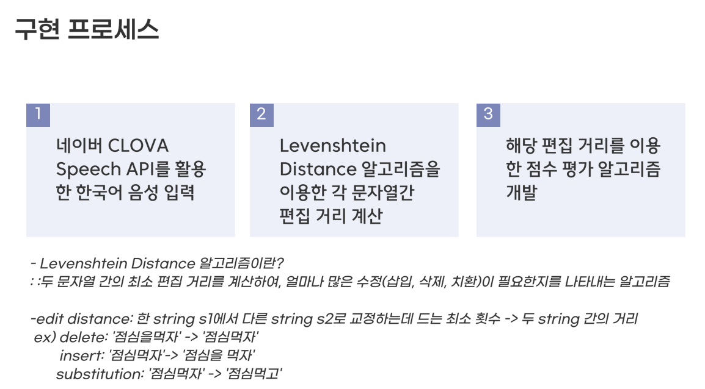
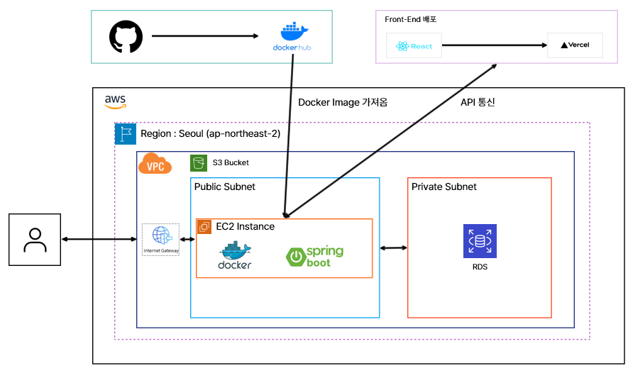
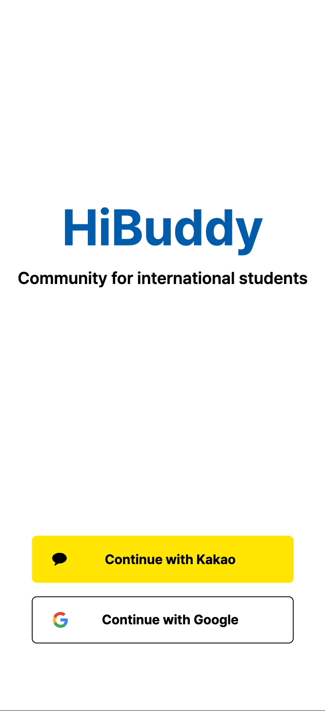
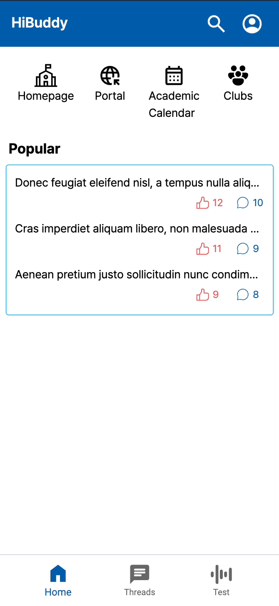
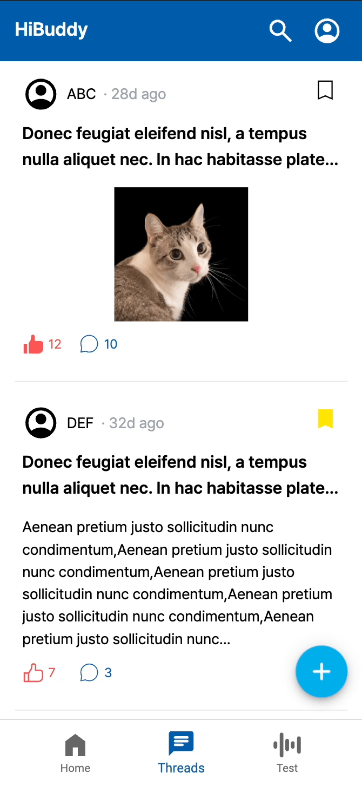
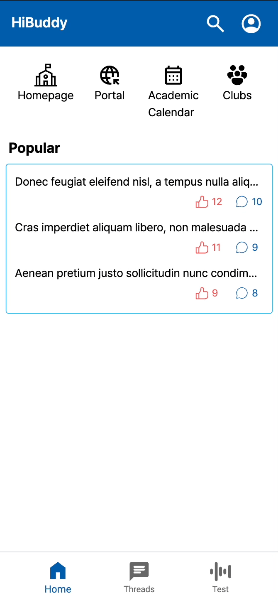
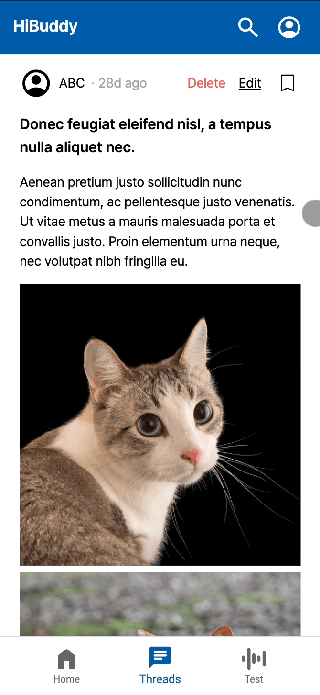
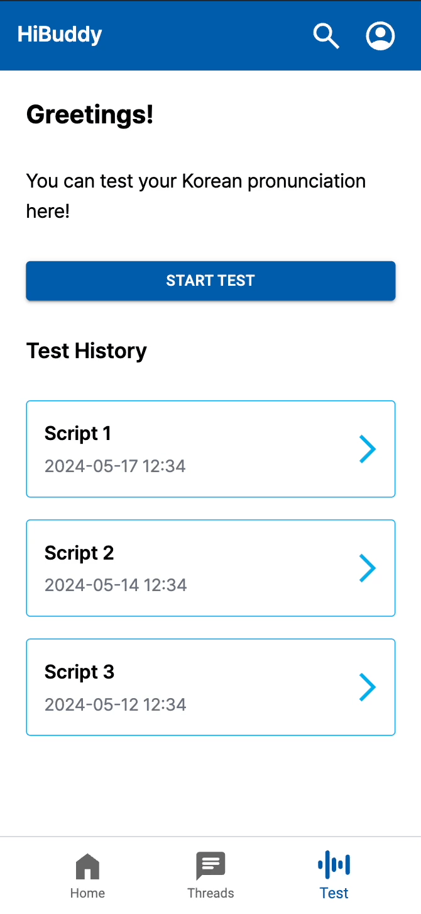

💡 Topic
- 인하대학교 컴퓨터공학 종합 설계 프로젝트
- 유사 서비스인 에브리타임은 국내 재학생 위주인 한계가 있어, 인하대 재학 국제학생을 위한 커뮤니티와 한국어 발음 평가를 제공하는 것을 목표로 함
🛠 Tech Stack
- Language: Java
- Framework: Spring Boot (MVC, Spring Data JPA, Spring Security)
- IDE: IntelliJ, DataGrip
- Test: JUnit5, Mockito
- Database: MySQL
- DevOps: AWS (EC2, RDS, S3), Nginx, Docker, GitHub Actions
- Tools: Git, GitHub, Swagger UI
🧑🏻💻 Team
- 웹 프런트엔드 개발자 1명
- 웹 백엔드 개발자 2명
👨💼 Requirement
- 로그인, 온보딩 기능
- 마이페이지 기능
-
스레드(게시판) 기능
- 게시글, 댓글, 좋아요, 스크랩
- 한국어 발음 평가 및 히스토리 기능
🤚🏻 Part
- 역할 : 팀원 (Backend Developer)
- OAuth2.0 소셜 로그인: 카카오·구글 API 연동, Spring Security 기반 인증/인가 설계
-
JWT 인증
- Access Token은 HTTP Header, Refresh Token은 Cookie로 전송 → stateless 서버 구조
- 토큰 유효성 검증·만료 처리로 로그인 상태 유지
- 마이페이지: 프로필(닉네임·이미지), 내 글·스크랩 조회, 로그아웃
-
한국어 발음 평가
- NAVER CLOVA API로 음성 → 텍스트 변환 후, Levenshtein Distance로 점수 산출
-
로직

- CLOVA Speech API로 발음 음성을 텍스트로 변환
- 정답 텍스트와 비교해 편집 거리(Levenshtein) 산출
- 편집 거리가 클수록 점수 하락
- 100점 만점으로 발음 점수 평가
- 음 높낮이 분석에 PRAAT 활용
-
난이도별 스크립트(상·중·하) — 국제언어문학회 논문을 참고해 외국인에게 어려운 자음·모음 비중으로 난이도 조정
RISS — 한국어 어려운 발음 관련 논문 - 발음 평가 내역 조회·삭제
🤔 Learned
새로운 기술·개념
- OAuth2.0·Spring Security를 처음 다뤘으나 문서와 자료로 학습. 소셜 로그인 인증/인가 흐름과 Security 설정의 중요성을 이해함.
- JWT·stateless 구조, Access/Refresh 역할을 명확히 하고 만료·검증 로직으로 안정성 확보.
-
Spring Boot 3.2의
RestClient를 공식 문서 위주로 도입 (블로그·ChatGPT 정보가 적어 스스로 최신 스택을 익히는 경험).
협업·문제 해결
- Access Token(Header)·Refresh Token(Cookie) 이유를 XSS·CSRF와 연결해 팀과 합의.
- 동료 진행 지연 시 소통으로 상황 공유·역할 재조정하여 일정 내 완수, 책임감·문제 해결 능력 향상.
외부 API·알고리즘
- CLOVA API + Levenshtein으로 발음 평가를 정량화하는 과정에서 API 활용과 알고리즘 적용 경험.
- PRAAT·난이도 스크립트 설계로 외부 도구·연구 자료 기반 개발 방법 학습.
System Architecture

📷 Screenshot
로그인 & 온보딩 · 메인 · 마이페이지


게시글 CRUD — 생성·조회·스크랩 · 댓글 조회·생성


게시글 검색 & 수정


한국어 발음 평가 · 히스토리
